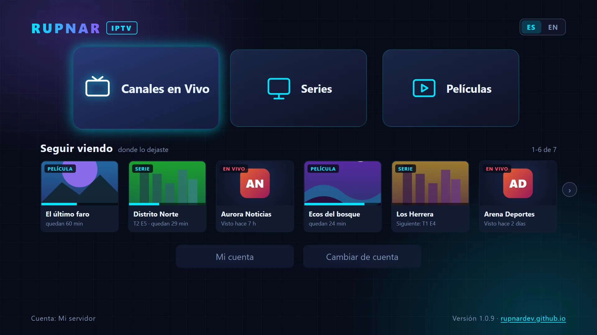

Varias cuentas
Servidor Xtream (usuario y contraseña) o lista M3U por URL o archivo. Guarda varias y cambia entre ellas al instante.
Rupnar IPTV es un reproductor gratuito para Windows. Añade tu servidor Xtream o tu lista M3U y disfruta de canales en vivo con programación, películas y series con todo en su sitio.

Pensado para usarse cómodamente con ratón o solo con teclado.
Servidor Xtream (usuario y contraseña) o lista M3U por URL o archivo. Guarda varias y cambia entre ellas al instante.
Mira el canal en pequeño junto a su programación y pásalo a grande sin cortes. Reconexión automática si se pierde la señal.
Carátulas, ficha completa, selector de temporadas y paso automático al siguiente capítulo.
Retoma películas, capítulos y canales justo donde los dejaste, directamente desde el menú.
Marca favoritos, busca dentro de cada categoría y oculta las categorías que no te interesan.
Elige idioma de audio y subtítulos; la app recuerda tu preferencia para los siguientes vídeos.
Velocidad, imagen en imagen, pantalla completa, volumen recordado, «Ir al directo» y atajos de teclado.
Reproduce también vídeos y audios que los navegadores no admiten (AVI, MPEG-2, Dolby…), de forma automática.
Tus datos de acceso se guardan cifrados en tu PC. Sin cuentas ni seguimiento. Se actualiza sola.
Pulsa una imagen para verla en grande.
Las capturas muestran contenido de demostración inventado (nombres, carátulas y logos sin marcas reales).
Vídeo de ejemplo: Big Buck Bunny y Elephants Dream © Blender Foundation, CC BY.
Siempre la última versión. Después se actualiza sola.
Windows 10 y 11 (64 bits) · Gratis
La primera vez, Windows puede mostrar «Windows protegió su PC». Es normal: el instalador aún no lleva firma digital de pago, así que Windows no lo reconoce todavía. Para instalar:
Si el navegador avisa de que el archivo «no se descarga con frecuencia», elige ··· → Conservar. Descárgala solo desde esta web o desde el repositorio oficial.
Las mismas funciones, en tu tele y en tu móvil.
Windows 10 y 11.
Smart TV Samsung (Tizen), con el mando a distancia.
Móviles y tabletas Android.
Televisores y reproductores con Android TV / Google TV.
La app es y seguirá siendo gratuita, sin anuncios. Si te resulta útil y quieres ayudar a que llegue a más plataformas, puedes invitarme a un café. Es totalmente voluntario.
Invítame a un café Las donaciones no dan acceso a ningún contenido ni a funciones extra: todas las funciones son para todos.Rupnar IPTV es únicamente un reproductor. No incluye, aloja, vende ni distribuye ningún canal, película, serie, lista ni otro tipo de contenido, y no está asociada a ningún proveedor de IPTV.
Todo lo que se carga en la app (canales, categorías, películas, series e imágenes) procede de una lista o servicio IPTV de un tercero, cuyos datos de acceso introduces tú.
Rupnar IPTV no se hace responsable del contenido de esa lista, de su disponibilidad ni de su legalidad. Utiliza únicamente listas y servicios a los que tengas derecho legítimo de acceso.
Para reproducir algunos formatos, la versión de Windows utiliza FFmpeg bajo licencia LGPL; su licencia se incluye en la carpeta de instalación.
No. Rupnar IPTV es solo un reproductor: necesitas tu propio servicio IPTV (servidor Xtream o lista M3U) proporcionado por un tercero.
Los datos de acceso de tu servicio: la URL del servidor con tu usuario y contraseña (Xtream), o la dirección o el archivo de tu lista M3U.
Sí, completamente: sin anuncios, sin suscripciones y sin funciones de pago. Las donaciones son voluntarias.
Solo en tu PC, cifradas por Windows. No se envían a ningún sitio salvo al servidor IPTV que tú indicas. Más detalles en la política de privacidad.
Porque el instalador aún no tiene firma digital. Pulsa «Más información» y «Ejecutar de todas formas». Consulta los pasos de instalación.
Sola. Al abrirla comprueba si hay una versión nueva y la instala automáticamente.